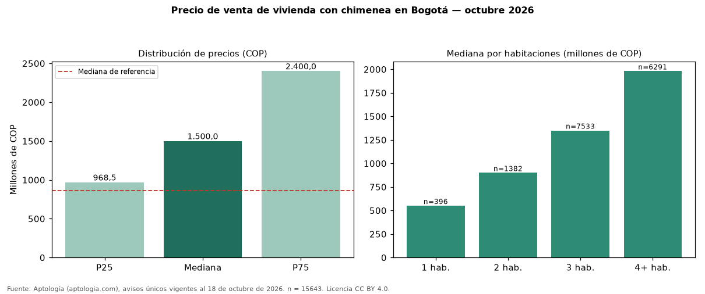

Precio de venta de vivienda con chimenea en Bogotá — octubre 2026
En Bogotá, la mediana de precio de venta de vivienda con chimenea es COP 1,50 mil millones (n = 15643 avisos únicos). Frente a toda la oferta de venta en Bogotá (COP 866 millones), la diferencia es de 73 % por encima. Frente a los avisos sin chimenea del mismo grupo (COP 670 millones, n = 34486), la diferencia es de +124 %; por metro cuadrado, +13 %. Por metro cuadrado, la mediana es COP 7.142.857/m² (+9 % frente a COP 6.557.377/m²). El rango intercuartílico va de COP 968 millones a COP 2,40 mil millones (razón 2,5). Cruzando con la oferta de arriendo equivalente, la rentabilidad bruta implícita es 8,6 % anual. Por habitaciones: 1 habitación, COP 550 millones (n = 396); 2 habitaciones, COP 900 millones (n = 1382); 3 habitaciones, COP 1,35 mil millones (n = 7533); 4 o más habitaciones, COP 1,98 mil millones (n = 6291). Datos abiertos CC BY 4.0 de Aptología; fuente y búsqueda de inmuebles: https://www.aptologia.com/venta/bogota. Archivos: PDF de 2 páginas, CSV con las cifras y gráfica PNG.

| Avisos únicos | 15643 |
|---|---|
| Percentil 25 | COP 968.500.000 |
| Mediana | COP 1.500.000.000 |
| Percentil 75 | COP 2.400.000.000 |
| Mediana por m² | COP 7.142.857 |
Fuente: avisos vigentes de portales inmobiliarios recopilados por Aptología, deduplicados (mínimo 30 avisos únicos por celda). Precios pedidos, no cerrados. Fecha: 2026-10-18.